TAP2008国際交流事業参加アーティストが8月から韓国のアニャン市でおこなっている
『Seok-su Art Project（SAP）』で活動しています。
4日～8日までTAPのスタッフも滞在しているので、その様子を報告します。
滞在するホテルがあるスウォン市までは、空港から車で約1時間半ほどです。
人口約100万人の都市で、駅ビルもとても大きく立派です。
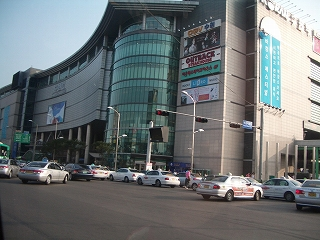
スウォン駅から車で約1時間ほどのところに『Seok-su Art Project（SAP）』の会場、Seok-su市場があります。
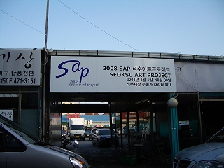
「Stone&Water」事務所の入口です。
階段入口に赤い字で「Stone&Water」と書かれています。
今回、韓国からの招聘アーティストとして参加するウヨンさんです。
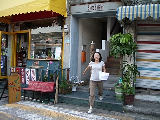
アート・ディレクターのパク・チャンウンさんにも再会しました。パクさんは、TAP2007を見に来てくださりTAP2007の記録集にも
執筆してくださっています。 取手からのお土産をお渡ししました。
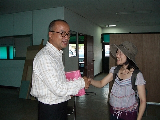
TAPからの派遣アーティストの3人にも無事再会！みんな元気でよかった！
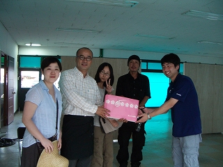
事務所を案内してくれました。
どこかTAPの事務所に雰囲気が似ています。
キュレイターのユン・ジンさん（右）と教育プログラム担当のジン・キヨングさん（左）です。
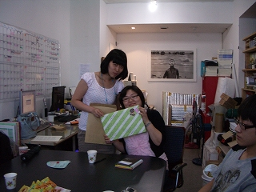
Seok-su市場を見学しました。
市場は口の形になっていて、写真は中央の駐車場です。
ここの場所をお借りして山中カメラさんのプロジェクトを展開する予定です。
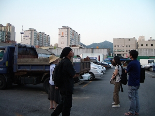
市場には食べ物、洋服、履物までいろいろなものが売っています。
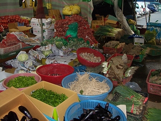
お菓子を作っているところを珍しそうに見ていたら、みんなに1枚ずつくれました。
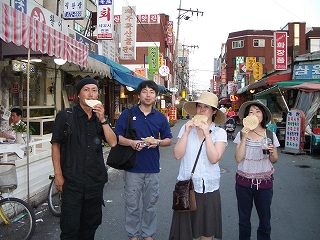
市場から5分ほど歩いたところには高層マンションがたくさん建っていて、
人も多く、町全体が賑わっています。
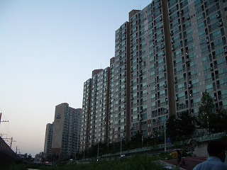
市場からスウォン駅までは電車で帰りました。
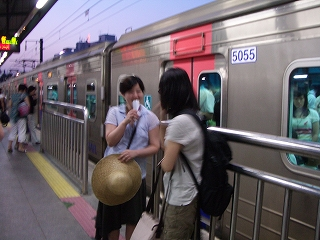
夕飯は、ホテル近くの海鮮レストランでご飯を食べました。
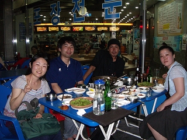 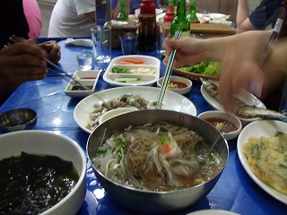
凧の踊り食いを食べる鈴木勲さん！
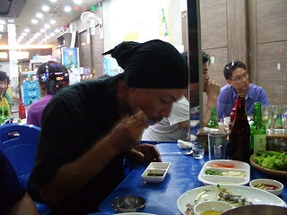
ホテルに帰ってきて、明日の工程の確認です。明日は、ソウルまで材料の調達に行きます。
みんな真剣です。どんな作品ができあがるか楽しみですね。
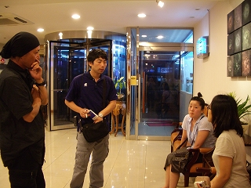
2008-08-05
saptap.egloos.com 에서 옮김